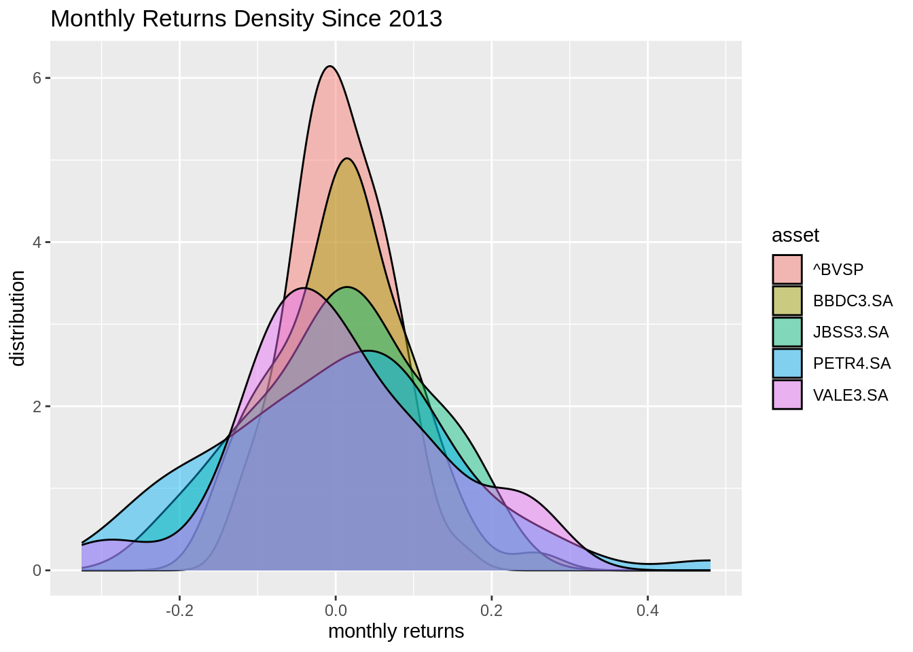
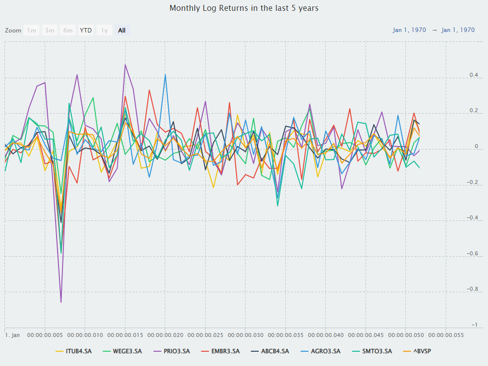
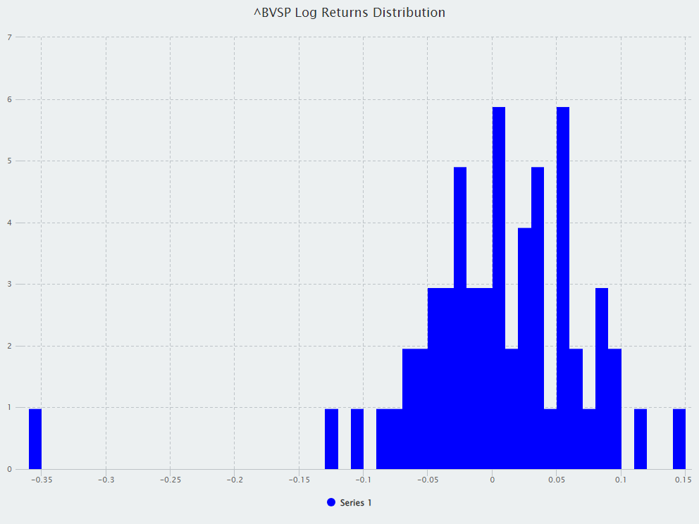
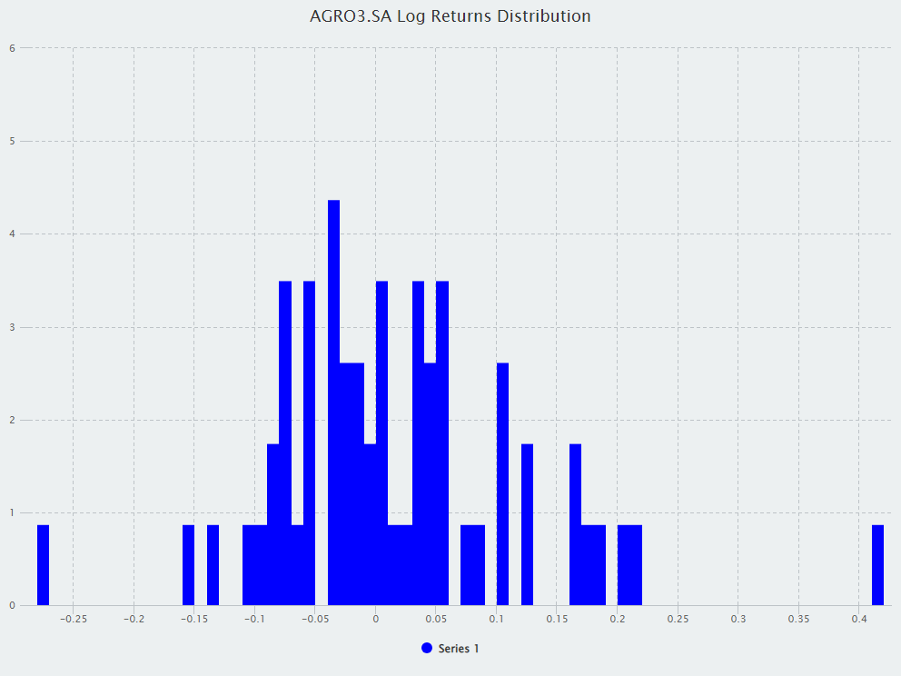
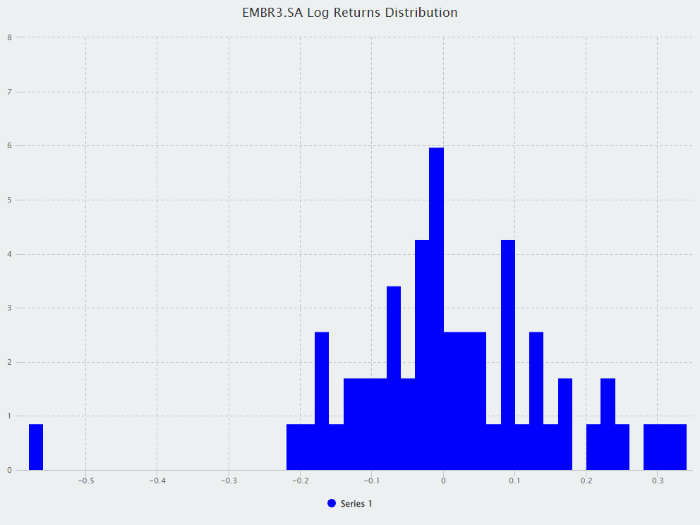
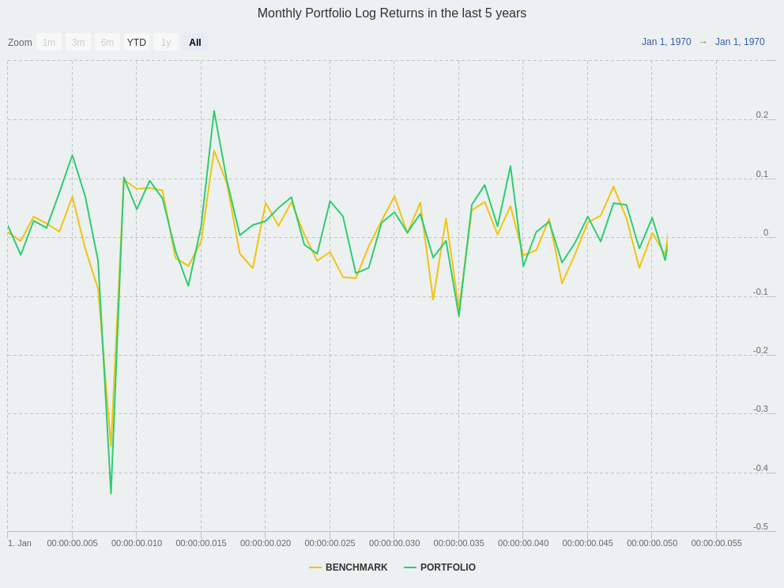

library(here)
library(timetk)
library(quantmod)
library(webshot2)
library(tidyverse)
library(lubridate)
library(tibbletime)
library(highcharter)
library(htmlwidgets)Caderno de R
AULA 2
OBS: nao foram utilizados acentos ortograficos para evitar erros ou caracteres nao reconhecidos no envio das tarefas
GRAFICOS COM GGPLOT2
No vídeo, ha uma breve explicacao da base de dados que sera utilizada e como ela sera manipulada usando dplyr para a construcao dos graficos.
Em seguida, ha uma explicacao da logica de camadas do ggplot2. Essa logica consiste no fato de que graficos em R sao construidos em camadas, com uma camada “em branco” sendo inicializada por um objeto ggplot que vai sendo incrementado com as camadas de dados (que definem quais dados serao utilizados na construcao do grafico), estetica (que definem quais variaveis vao em quais eixos, se estao agrupadas por alguma outra variavel ou nao, etc) e geometrica/geom, que efetivamente define qual sera o tipo de grafico.
Vale notar que diferentes geoms podem ser combinados em um mesmo grafico, e que a estetica pode ser declarada dentro de cada geom ou dentro do proprio objeto ggplot que inicializa o grafico.
O primeiro grafico apresentado eh o grafico de pontos, que comumente eh utilizado para fazer graficos de dispersao:
base <- read.csv(here("./caderno_de_r_files/LucroFilmes.csv"), sep = ";")
base <- base %>%
mutate(DataLancamento = as.Date(DataLancamento, format = "%m/%d/%Y")) %>%
mutate(
AnoLancamento = format(DataLancamento, "%Y"),
MesLancamento = format(DataLancamento, "%m"),
LucroLocal = as.numeric(LucroLocal),
LucroMundial = as.numeric(LucroMundial)
)
ggplot(base) +
geom_point(aes(LucroLocal, LucroMundial))Em seguida, sao apresentados os graficos:
Histograma: Utilizado para avaliar distribuicoes de frequencias, a base do retangulo representa a faixa/classe da variavel estudada e a altura a quantidade do conjunto que se encontra nessa classe/faixa.
ggplot(base) +
geom_histogram(aes(Genero), stat = "count")Grafico de barras: Um tipo de grafico bastante comum, onde as barras representam proporcionalmente os valores apresentados. Pode ser utilizado tanto com valores absolutos quanto com percentuais, podendo tambem ser agrupado/empilhado.
ggplot(base) +
geom_bar(aes(Distribuidor), stat = "count")
Boxplot/Diagrama de caixa: Um tipo de grafico bastante util em que se pode visualizar a distribuicao de um dado - o grafico indica os valores minimos e maximos, mediana e os percentis 25 e 75, alem de outliers.
ggplot(base) +
geom_boxplot(aes(Classificacao, LucroMundial))
Grafico de linha: Normalmente utilizado para demonstrar a evolucao de alguma variavel ao longo do tempo.
ggplot(base) +
geom_line(aes(AnoLancamento, group = 1), stat = "count")
O restante do video eh dedicado a personalizacao de parametros do grafico, como tamanho, cor, preenchimento, titulo, legendas etc. Ha tambem uma secao demonstrando como combinar geoms, com esteticas especificas em cada um deles - tambem eh demonstrado como filtrar dados especificos antes da geracao do grafico e como adicionar estatisticas sumarias.
A fim de manter a brevidade, todos esses parametros serao demonstrados em um unico grafico de autoria propia:
base %>%
filter(as.numeric(AnoLancamento) >= 2000) %>%
group_by(Distribuidor) %>%
mutate(total_filmes = n()) %>% # usando esses dados p/ ver as dez maiores, as demais, serao agrupadas em outros
ungroup() %>%
mutate(distribuidor_agrupado = ifelse(
total_filmes < 68, "Outros", Distribuidor
)) %>%
group_by(distribuidor_agrupado, Genero) %>%
summarise(lucro_medio_por_genero = mean(LucroMundial, na.rm = TRUE)) %>%
mutate(lucro_medio_por_genero = round(lucro_medio_por_genero / 100000)) %>%
ungroup() %>%
ggplot() +
geom_point(aes(distribuidor_agrupado, lucro_medio_por_genero, color = Genero)) +
geom_text(aes(distribuidor_agrupado, lucro_medio_por_genero, label = lucro_medio_por_genero, color = Genero), hjust = -.05, vjust = 1) +
labs(
title = "LUCRO MEDIO MUNDIAL DAS DISTRIBUIDORAS POR GENERO",
x = "DISTRIBUIDORA",
y = "LUCRO MEDIO (MILHPES DE DOLARES)",
color = "GENERO"
) +
scale_y_continuous(breaks = seq(0, 3500, by = 500), label = paste0(seq(0, 3500, by = 500), "MM")) +
theme_classic() +
theme(axis.text.x = element_text(angle = 45, hjust = 1))
AULA 3
EXERCICIO 1
Reescrever o comando abaixo usando %>%:
length(unique(iris$Species))[1] 3iris %>%
pull(Species) %>%
unique() %>%
length()[1] 3EXERCICIO 2
Verificar outras paletas de cores e temas e escolher um preferido para o grafico abaixo
ggplot(iris, aes(Sepal.Width, Sepal.Length, col = Species)) +
geom_point() +
ggthemes::theme_few() +
ggthemes::scale_color_solarized()
ggplot(iris, aes(Sepal.Width, Sepal.Length, col = Species)) +
geom_point() +
ggthemes::theme_gdocs() +
scale_color_brewer(palette = "Accent")EXERCICIO 3
1) Encontrar todos os voos que
a) Atrasaram duas horas ou mais
nycflights13::flights %>%
mutate(
arr_delay_hours = arr_delay / 60
) %>%
filter(arr_delay_hours >= 2) %>%
distinct(flight) %>%
pull() %>%
unique() %>%
length()[1] 2117b) Voaram para Houston (IAH ou HOU)
nycflights13::flights %>%
filter(dest %in% c("IAH", "HOU")) %>%
distinct(flight) %>%
pull() %>%
unique() %>%
length()[1] 752c) Foram operados pelas cias United, American ou Delta
nycflights13::flights %>%
inner_join(nycflights13::airlines, by = "carrier") %>%
filter(
grepl("United", name) | grepl("American", name) | grepl("Delta", name)
) %>%
distinct(flight) %>%
pull() %>%
unique() %>%
length()[1] 1666d) Partiram entre meia noite e 6 da manha
nycflights13::flights %>%
filter((dep_time >= 0 & dep_time <= 600) | (dep_time %in% c(24, 2400))) %>%
distinct(flight) %>%
pull() %>%
unique() %>%
length()[1] 7532) O que faz a funcao auxiliar do dplyr between? Pode ser util para simplificar os codigos escritos? Mostre
A funcao between(x, esquerda, direita) eh o equivalente a escrever, para uma variavel qualquer, que x >= esquerda & x <= direita - ou seja, eh o equivalente a declarar que a variavel x deve estar entre os dois valores especificados. Ela pode ser utilizada para auxiliar a responder o item d) da primeira pergunta:
nycflights13::flights %>%
filter(between(dep_time, 0, 600) | (dep_time %in% c(24, 2400))) %>%
distinct(flight) %>%
pull() %>%
unique() %>%
length()[1] 7533) Quantos voos tem horario de partida faltando? Ha outras variaveis faltando? O que estas linhas provavelmente representam?
Existem 1906 voos sem informacao de horario de partida. Alem das informacoes de horario de partida, tambem nao ha informacoes sobre atrasos na partida, horario de chegada, atrasos na chegada e tempo total de voo - possivelmente se tratam de voos cancelados, remarcados, etc.
nycflights13::flights %>%
filter(is.na(dep_time)) %>%
distinct(flight) %>%
pull() %>%
unique() %>%
length()[1] 19064) Encontre os seis voos que mais chegaram atrasados
nycflights13::flights %>%
arrange(desc(arr_delay)) %>%
distinct(flight, .keep_all = T) %>%
select(flight, arr_delay) %>%
head(6)# A tibble: 6 × 2
flight arr_delay
<int> <dbl>
1 51 1272
2 3535 1127
3 3695 1109
4 177 1007
5 3075 989
6 2391 9315) Ordene o arquivo para encontrar os voos mais rapidos
nycflights13::flights %>%
arrange(air_time) %>%
distinct(flight, .keep_all = T) %>%
select(flight, air_time) %>%
head(5)# A tibble: 5 × 2
flight air_time
<int> <dbl>
1 4368 20
2 4631 20
3 4276 21
4 4619 21
5 2132 216) Quais voos viajaram mais longe? E quais viajaram para mais perto?
Voos mais distantes:
nycflights13::flights %>%
arrange(desc(distance)) %>%
mutate(
distance_km = distance * 1.60934
) %>%
distinct(flight, .keep_all = T) %>%
select(flight, distance, distance_km) %>%
head(5)# A tibble: 5 × 3
flight distance distance_km
<int> <dbl> <dbl>
1 51 4983 8019.
2 15 4963 7987.
3 887 3370 5423.
4 303 2586 4162.
5 1865 2586 4162.Voos mais proximos:
nycflights13::flights %>%
arrange(distance) %>%
mutate(
distance_km = distance * 1.60934
) %>%
distinct(flight, .keep_all = T) %>%
select(flight, distance, distance_km) %>%
head(5)# A tibble: 5 × 3
flight distance distance_km
<int> <dbl> <dbl>
1 1632 17 27.4
2 3833 80 129.
3 4193 80 129.
4 4502 80 129.
5 4645 80 129. 7) O que ocorre se voce repetir uma variavel multiplas vezes em uma instrucao select?
A variavel eh selecionada apenas uma vez:
nycflights13::flights %>%
select(flight, flight)# A tibble: 336,776 × 1
flight
<int>
1 1545
2 1714
3 1141
4 725
5 461
6 1696
7 507
8 5708
9 79
10 301
# ℹ 336,766 more rows8) O que faz a funcao one_of()? Como poderia ser util na utilizacao com esse vetor? vars <- c(“year”, “month”, “day”, “dep_delay”, “arr_delay”)
A funcao one_of() (atualmente depreciada em favor de all_of() ou any_of()) permite selecionar colunas de um dataframe pelo seus nomes, inclusive se estiverem contidas em um vetor. No exemplo acima:
vars <- c("year", "month", "day", "dep_delay", "arr_delay")
nycflights13::flights %>%
select(flight, any_of(vars)) %>%
head(5)# A tibble: 5 × 6
flight year month day dep_delay arr_delay
<int> <int> <int> <int> <dbl> <dbl>
1 1545 2013 1 1 2 11
2 1714 2013 1 1 4 20
3 1141 2013 1 1 2 33
4 725 2013 1 1 -1 -18
5 461 2013 1 1 -6 -25nycflights13::flights %>%
select(flight, all_of(vars)) %>%
head(5)# A tibble: 5 × 6
flight year month day dep_delay arr_delay
<int> <int> <int> <int> <dbl> <dbl>
1 1545 2013 1 1 2 11
2 1714 2013 1 1 4 20
3 1141 2013 1 1 2 33
4 725 2013 1 1 -1 -18
5 461 2013 1 1 -6 -259) Como o resultado da execucao do codigo abaixo o surpreendeu? Como podes alterar o padrao da caixa alta e baixa?
select(nycflights13::flights, contains("TIME"))# A tibble: 336,776 × 6
dep_time sched_dep_time arr_time sched_arr_time air_time time_hour
<int> <int> <int> <int> <dbl> <dttm>
1 517 515 830 819 227 2013-01-01 05:00:00
2 533 529 850 830 227 2013-01-01 05:00:00
3 542 540 923 850 160 2013-01-01 05:00:00
4 544 545 1004 1022 183 2013-01-01 05:00:00
5 554 600 812 837 116 2013-01-01 06:00:00
6 554 558 740 728 150 2013-01-01 05:00:00
7 555 600 913 854 158 2013-01-01 06:00:00
8 557 600 709 723 53 2013-01-01 06:00:00
9 557 600 838 846 140 2013-01-01 06:00:00
10 558 600 753 745 138 2013-01-01 06:00:00
# ℹ 336,766 more rowsApesar do codigo estar selecionando TIME em caixa alta, ele retorna todas as variaveis que contem a string TIME, independentemente de estarem em caixa alta ou baixa. Para alterar os nomes das colunas de caixa baixa para caixa alta, podemos fazer:
nycflights13::flights %>%
rename_with(toupper) %>%
glimpse()Rows: 336,776
Columns: 19
$ YEAR <int> 2013, 2013, 2013, 2013, 2013, 2013, 2013, 2013, 2013, 2…
$ MONTH <int> 1, 1, 1, 1, 1, 1, 1, 1, 1, 1, 1, 1, 1, 1, 1, 1, 1, 1, 1…
$ DAY <int> 1, 1, 1, 1, 1, 1, 1, 1, 1, 1, 1, 1, 1, 1, 1, 1, 1, 1, 1…
$ DEP_TIME <int> 517, 533, 542, 544, 554, 554, 555, 557, 557, 558, 558, …
$ SCHED_DEP_TIME <int> 515, 529, 540, 545, 600, 558, 600, 600, 600, 600, 600, …
$ DEP_DELAY <dbl> 2, 4, 2, -1, -6, -4, -5, -3, -3, -2, -2, -2, -2, -2, -1…
$ ARR_TIME <int> 830, 850, 923, 1004, 812, 740, 913, 709, 838, 753, 849,…
$ SCHED_ARR_TIME <int> 819, 830, 850, 1022, 837, 728, 854, 723, 846, 745, 851,…
$ ARR_DELAY <dbl> 11, 20, 33, -18, -25, 12, 19, -14, -8, 8, -2, -3, 7, -1…
$ CARRIER <chr> "UA", "UA", "AA", "B6", "DL", "UA", "B6", "EV", "B6", "…
$ FLIGHT <int> 1545, 1714, 1141, 725, 461, 1696, 507, 5708, 79, 301, 4…
$ TAILNUM <chr> "N14228", "N24211", "N619AA", "N804JB", "N668DN", "N394…
$ ORIGIN <chr> "EWR", "LGA", "JFK", "JFK", "LGA", "EWR", "EWR", "LGA",…
$ DEST <chr> "IAH", "IAH", "MIA", "BQN", "ATL", "ORD", "FLL", "IAD",…
$ AIR_TIME <dbl> 227, 227, 160, 183, 116, 150, 158, 53, 140, 138, 149, 1…
$ DISTANCE <dbl> 1400, 1416, 1089, 1576, 762, 719, 1065, 229, 944, 733, …
$ HOUR <dbl> 5, 5, 5, 5, 6, 5, 6, 6, 6, 6, 6, 6, 6, 6, 6, 5, 6, 6, 6…
$ MINUTE <dbl> 15, 29, 40, 45, 0, 58, 0, 0, 0, 0, 0, 0, 0, 0, 0, 59, 0…
$ TIME_HOUR <dttm> 2013-01-01 05:00:00, 2013-01-01 05:00:00, 2013-01-01 0…AULA 4
EXERCICIO 1
1) Como as variaveis e observacoes sao usadas em cada uma das tabelas de amostra?
Na tabela 1, cada variavel possui sua propria coluna e cada observacao tem sua propria linha.
Na tabela 2, as variaveis populacao e casos sao consolidadas na coluna tipo, de forma que as observacoes por ano sao repetidas.
Na tabela 3, as variaveis populacao e casos estao consolidadas na coluna rate, de forma que os casos estao no numerador da observacao e a populacao no denominador.
Na tabela 4a, temos os anos como variaveis e os casos como observacao. Na tabela 4b, tambem temos os anos como variaveis, porem a populacao como observacoes.
table1# A tibble: 6 × 4
country year cases population
<chr> <dbl> <dbl> <dbl>
1 Afghanistan 1999 745 19987071
2 Afghanistan 2000 2666 20595360
3 Brazil 1999 37737 172006362
4 Brazil 2000 80488 174504898
5 China 1999 212258 1272915272
6 China 2000 213766 1280428583table2# A tibble: 12 × 4
country year type count
<chr> <dbl> <chr> <dbl>
1 Afghanistan 1999 cases 745
2 Afghanistan 1999 population 19987071
3 Afghanistan 2000 cases 2666
4 Afghanistan 2000 population 20595360
5 Brazil 1999 cases 37737
6 Brazil 1999 population 172006362
7 Brazil 2000 cases 80488
8 Brazil 2000 population 174504898
9 China 1999 cases 212258
10 China 1999 population 1272915272
11 China 2000 cases 213766
12 China 2000 population 1280428583table3# A tibble: 6 × 3
country year rate
<chr> <dbl> <chr>
1 Afghanistan 1999 745/19987071
2 Afghanistan 2000 2666/20595360
3 Brazil 1999 37737/172006362
4 Brazil 2000 80488/174504898
5 China 1999 212258/1272915272
6 China 2000 213766/1280428583table4a# A tibble: 3 × 3
country `1999` `2000`
<chr> <dbl> <dbl>
1 Afghanistan 745 2666
2 Brazil 37737 80488
3 China 212258 213766table4b# A tibble: 3 × 3
country `1999` `2000`
<chr> <dbl> <dbl>
1 Afghanistan 19987071 20595360
2 Brazil 172006362 174504898
3 China 1272915272 12804285832) Calcule a razao para table2 e table4a + table4b.
table2 %>%
pivot_wider(names_from = type, values_from = count) %>%
mutate(rate = cases / population)# A tibble: 6 × 5
country year cases population rate
<chr> <dbl> <dbl> <dbl> <dbl>
1 Afghanistan 1999 745 19987071 0.0000373
2 Afghanistan 2000 2666 20595360 0.000129
3 Brazil 1999 37737 172006362 0.000219
4 Brazil 2000 80488 174504898 0.000461
5 China 1999 212258 1272915272 0.000167
6 China 2000 213766 1280428583 0.000167 table4a %>%
pivot_longer(cols = c("1999", "2000")) %>%
rename(year = name, cases = value) %>%
inner_join(
table4b %>%
pivot_longer(cols = c("1999", "2000")) %>%
rename(year = name, population = value),
by = c("year", "country")
) %>%
mutate(rate = cases / population)# A tibble: 6 × 5
country year cases population rate
<chr> <chr> <dbl> <dbl> <dbl>
1 Afghanistan 1999 745 19987071 0.0000373
2 Afghanistan 2000 2666 20595360 0.000129
3 Brazil 1999 37737 172006362 0.000219
4 Brazil 2000 80488 174504898 0.000461
5 China 1999 212258 1272915272 0.000167
6 China 2000 213766 1280428583 0.000167 3) Extraia o numero de casos de tuberculose (cases) por pais por ano.
Extraia a população correspondente por pais por ano. Divida os casos por populacao e multiplique por 10000. Guarde de volta no local apropriado. Com qual representacao eh mais facil trabalhar? Qual eh o mais dificil? Por que?
table1 %>%
group_by(country, year) %>%
mutate(
cases_per_10k = (cases / population) * 10000
) %>%
ungroup()# A tibble: 6 × 5
country year cases population cases_per_10k
<chr> <dbl> <dbl> <dbl> <dbl>
1 Afghanistan 1999 745 19987071 0.373
2 Afghanistan 2000 2666 20595360 1.29
3 Brazil 1999 37737 172006362 2.19
4 Brazil 2000 80488 174504898 4.61
5 China 1999 212258 1272915272 1.67
6 China 2000 213766 1280428583 1.67 table2 %>%
pivot_wider(names_from = type, values_from = count) %>%
group_by(country, year) %>%
mutate(
cases_per_10k = (cases / population) * 10000
) %>%
ungroup()# A tibble: 6 × 5
country year cases population cases_per_10k
<chr> <dbl> <dbl> <dbl> <dbl>
1 Afghanistan 1999 745 19987071 0.373
2 Afghanistan 2000 2666 20595360 1.29
3 Brazil 1999 37737 172006362 2.19
4 Brazil 2000 80488 174504898 4.61
5 China 1999 212258 1272915272 1.67
6 China 2000 213766 1280428583 1.67 table3 %>%
separate(rate, into = c("cases", "population"), sep = "/") %>%
mutate(
cases = as.numeric(cases),
population = as.numeric(population)
) %>%
group_by(country, year) %>%
mutate(
cases_per_10k = (cases / population) * 10000
) %>%
ungroup()# A tibble: 6 × 5
country year cases population cases_per_10k
<chr> <dbl> <dbl> <dbl> <dbl>
1 Afghanistan 1999 745 19987071 0.373
2 Afghanistan 2000 2666 20595360 1.29
3 Brazil 1999 37737 172006362 2.19
4 Brazil 2000 80488 174504898 4.61
5 China 1999 212258 1272915272 1.67
6 China 2000 213766 1280428583 1.67 table4a %>%
pivot_longer(cols = c("1999", "2000")) %>%
rename(year = name, cases = value) %>%
inner_join(
table4b %>%
pivot_longer(cols = c("1999", "2000")) %>%
rename(year = name, population = value),
by = c("year", "country")
) %>%
group_by(country, year) %>%
mutate(
cases_per_10k = (cases / population) * 10000
) %>%
ungroup()# A tibble: 6 × 5
country year cases population cases_per_10k
<chr> <chr> <dbl> <dbl> <dbl>
1 Afghanistan 1999 745 19987071 0.373
2 Afghanistan 2000 2666 20595360 1.29
3 Brazil 1999 37737 172006362 2.19
4 Brazil 2000 80488 174504898 4.61
5 China 1999 212258 1272915272 1.67
6 China 2000 213766 1280428583 1.67 A representacao mais facil de trabalhar eh a tabela 1 e a mais dificil a tabela 4. A 1 eh mais facil de ser trabalhada porque ja esta num formato tidy (uma observacao por linha e uma coluna para cada variavel), enquanto a tabela 4 precisa ser tratada e unificada numa tabela so, ja que as variaveis estao em tabelas diferentes e nao estao em colunas.
4) Recrie o grafico mostrando a mudança nos casos ao longo do tempo
usando table2 em vez de table1. O que você precisa fazer primeiro?
A primeira coisa a ser feita eh separar a coluna type em duas colunas distintas, para que seja possivel plotar os casos de forma separada da populacao.
table2 %>%
pivot_wider(names_from = type, values_from = count) %>%
ggplot(., aes(year, cases)) +
geom_line(aes(group = country), colour = "grey50") +
geom_point(aes(colour = country))
EXERCICIO 2
1) Porque pivot_longer() e pivot_wider() nao sao perfeitamente
simetricas? Considere cudadosamente o seguinte exemplo:
stocks <- tibble(
year = c(2015, 2015, 2016, 2016),
half = c( 1, 2, 1, 2),
return = c(1.88, 0.59, 0.92, 0.17)
)
stocks %>%
pivot_wider(names_from = year, values_from = return) %>%
pivot_longer(`2015`:`2016`, names_to = "year", values_to = "return")As funcoes nao sao perfeitamente simetricas porque no dataframe original a coluna “year” eh do tipo numerico (double) - ao se executar o pivot_wider, em que os anos sao convertidos para nomes de colunas, os anos se tornam do tipo caractere (str), fazendo com que a operacao final se torne assimetrica em relacao ao dataframe original (onde o ano era uma variavel numerica). As operacoes tambem sao assimetricas na medida em que a ordem das colunas eh alterada.
2) Porque este codigo falha?
table4a %>% pivot_longer(c(1999, 2000), names_to = “year”, values_to = “cases”)
O codigo falha porque declara o nome das colunas a serem transformadas como valores numericos, o que faz com que o R interprete como se estivessemos declarando a posicao das colunas. Para que a operacao seja executada corretamente, os nomes das colunas devem ser declarados como str.
3) O que aconteceria ao usar a funcao pivot_wider na tabela abaixo? Como poderia consertar incluindo uma coluna?
people <- tribble(
~name, ~key, ~value,
#-----------------|--------|------
"Phillip Woods", "age", 45,
"Phillip Woods", "height", 186,
"Phillip Woods", "age", 50,
"Jessica Cordero", "age", 37,
"Jessica Cordero", "height", 156
)
people %>%
pivot_wider(names_from = key, values_from = value)# A tibble: 2 × 3
name age height
<chr> <list> <list>
1 Phillip Woods <dbl [2]> <dbl [1]>
2 Jessica Cordero <dbl [1]> <dbl [1]>Ocorreria um erro porque o mesmo valor para a mesma chave esta especificado mais de uma vez - isso poderia ser corrigido ao se adicionar uma coluna “id” para diferenciar pessoas com o mesmo nome:
people <- tribble(
~name, ~id, ~key, ~value,
#-----------------|----|--------|------
"Phillip Woods", 1, "age", 45,
"Phillip Woods", 1, "height", 186,
"Phillip Woods", 2,"age", 50,
"Jessica Cordero", 3,"age", 37,
"Jessica Cordero", 3,"height", 156
)
people %>%
pivot_wider(names_from = key, values_from = value)# A tibble: 3 × 4
name id age height
<chr> <dbl> <dbl> <dbl>
1 Phillip Woods 1 45 186
2 Phillip Woods 2 50 NA
3 Jessica Cordero 3 37 1564) Organize o tibble abaixo. Voce precisara utilizar pivot_longer() ou pivot_wider()? Quais sao as variaveis?
preg <- tribble(
~pregnant, ~male, ~female,
"yes", NA, 10,
"no", 20, 12
)Sera necessario usar a funcao pivot_longer, de modo que tenhamos as variaveis pregnant, gender e cases
preg %>%
pivot_longer(c("male", "female"), names_to = "gender", values_to = "cases")# A tibble: 4 × 3
pregnant gender cases
<chr> <chr> <dbl>
1 yes male NA
2 yes female 10
3 no male 20
4 no female 125) O que os argumentos “extra” e “fill” fazem em separate( )? Experimente as varias opcoes com os seguintes conjunto de dados.
tibble(x = c("a,b,c", "d,e,f,g", "h,i,j")) %>%
separate(x, c("one", "two", "three"))# A tibble: 3 × 3
one two three
<chr> <chr> <chr>
1 a b c
2 d e f
3 h i j tibble(x = c("a,b,c", "d,e", "f,g,i")) %>%
separate(x, c("one", "two", "three"))# A tibble: 3 × 3
one two three
<chr> <chr> <chr>
1 a b c
2 d e <NA>
3 f g i O argumento “extra” eh utilizado para lidar com strings que contem um caractere a mais em relacao aos demais, sendo possivel ignorar o caractere extra ou fundi-lo a um dos caracteres remanescentes:
tibble(x = c("a,b,c", "d,e,f,g", "h,i,j")) %>%
separate(x, c("one", "two", "three"), extra = "merge")# A tibble: 3 × 3
one two three
<chr> <chr> <chr>
1 a b c
2 d e f,g
3 h i j tibble(x = c("a,b,c", "d,e,f,g", "h,i,j")) %>%
separate(x, c("one", "two", "three"), extra = "drop")# A tibble: 3 × 3
one two three
<chr> <chr> <chr>
1 a b c
2 d e f
3 h i j O argumento “fill” eh utilizado para lidar com strings que possuem um caractere a menos em relacao as demais, sendo possivel ignorar o caractere faltante ou substitui-lo por um caratcere a esquerda ou a direita:
tibble(x = c("a,b,c", "d,e", "f,g,i")) %>%
separate(x, c("one", "two", "three"), fill = "right")# A tibble: 3 × 3
one two three
<chr> <chr> <chr>
1 a b c
2 d e <NA>
3 f g i tibble(x = c("a,b,c", "d,e", "f,g,i")) %>%
separate(x, c("one", "two", "three"), fill = "left")# A tibble: 3 × 3
one two three
<chr> <chr> <chr>
1 a b c
2 <NA> d e
3 f g i 6) Ambos unite( ) e separate( ) tem um argumento “remove”. O que ele faz? Porque deve atribuir FALSE a ele?
O argumento “remove” retira a coluna original que contem a string que esta sendo separada do dataframe. Deve-se atribuir FALSE a ele para que os dados originais sejam preservados no dataframe.
7) Compare e contraste separate( ) e extract( ). Porque ha tres variacoes de separacao (por posicao, pelo separador, e com grupos), mas apenas um unite( )?
A funcao extract separa uma coluna de caracteres em diversas colunas atraves de expressos regulares (REGEX), enquanto a funcao separate separa a coluna de caracteres atraves de um separador qualquer. Ha apenas um unite porque a funcao de unir uma serie de colunas de caracteres em uma so nao possui variacoes do tipo o separador que separa um caractere de outro ou um padrao especifico de caracteres que necessita ser extraido em diferentes colunas - eh necessario apenas especificar qual separador ira separar as strings unidas.
8) Compare e contraste os argumento de fill( ) aos de pivot_wider( ) e complete( ).
A funcao fill eh utilizada para preencher valores faltantes em um dataframe, com os argumentos data (o df), as colunas a serem preenchidas e a direcao em que serao preenchidas.
A funcao pivot_wider eh utilizada para aumentar o numero de colunas e reduzir o numero de linhas, com diversos argumentos, sendo os principais names_from (as novas colunas geradas), values_from (de onde sairao os valores das colunas geradas). Destaca-se nessa comparacao o argumento values_fill (o valor que deve substituir os valores faltantes)
A funcao complete eh utilizada para revelar valores faltantes implicitos, isto eh, a funcao gera todas as combinacoes possiveis entre duas ou mais variaveis e revela valores faltantes. Neste comparativo, destaca-se o argumento fill, utilizado para preencher valores faltantes por algum valor designado.
9) O que faz o argumento direction em fill( )?
O argumento direction define em que direcao os valores faltantes serao preenchidos - se for definido como down, o ultimo valor preenchido sera “arrastado” ate o proximo valor preenchido, se definido como “up” o valor preenchido sera “arrastado” ate preencher todos os valores faltantes acima dele, se definido como “downup” os valores faltantes seram preenchidos primeiro para baixo e depois para cima.
AULA 6
EXERCICIOS
1) Encontre no Yahoo os tickers de Petrobras (a mais liquida), Vale, Friboi, Bradesco, e o indice Bovespa e armazene-os num vetor denominado “ativos”.
ativos <- c("PETR4.SA", "VALE3.SA", "JBSS3.SA", "BBDC3.SA", "^BVSP")2) Obtenha os precos dos ativos do exercicio 1 para o ultimo ano.
prices <- getSymbols(
ativos,
src = "yahoo",
from = "2012-12-31",
to = "2017-12-31",
auto.assign = TRUE,
warnings = FALSE
) %>%
map(~Ad(get(.))) %>%
reduce(merge) %>%
"colnames<-"(ativos)3) Suponha que uma ação caia 50% e depois sobe 50%, de quanto foi a variação total no período? dica(Componha o retorno destes dois períodos utilizando juros compostos.)
Supondo que a ação valha R$ 100: após uma queda de 50%, a ação passa a valer R$ 50. Após uma valorização de 50%, passa a valer R$ 75. Fazendo (75 - 100) / 100 = -25%
4) Suponha que uma acao caia 50% e depois sobe 50%, de quanto foi a variacao total no periodo? dica (utilize os log retornos)
Utilizando a formula dos log retornos, partindo do exemplo acima, temos:
log(75/ 100)[1] -0.2876821Convertendo para retorno linear:
exp(log(75/100)) - 1[1] -0.255) Utilize o ggplot2 e o codigo abaixo para obter a forma longa do objeto tidyverse desenvolvido no texto. Obtenha um histograma conjunto com uma cor por ativo utilizando os argumentos alpha=0.45 e binwidth = .005. Coloque o titulo de “Monthly Returns Since 2013”
prices %>%
to.monthly(indexAt = "lastof", OHLC = FALSE) %>%
tk_tbl(preserve_index = TRUE, rename_index = "date") %>%
tbl_time(index = "date") %>%
pivot_longer(cols = -date, names_to = "asset", values_to = "returns") %>%
group_by(asset) %>%
mutate(returns = (log(returns) - log(lag(returns)))) %>%
pivot_wider(names_from = asset, values_from = returns) %>%
select(date, all_of(ativos)) %>%
na.omit() %>%
pivot_longer(cols = all_of(ativos), names_to = "asset", values_to = "returns") %>%
ggplot(., aes(returns, fill = asset)) +
geom_histogram(alpha = .45, binwidth = .005) +
labs(title = "Monthly Returns Since 2013")6) Obtenha o grafico acima utilizando o conceito de ggplot2:facet_wrap().
prices %>%
to.monthly(indexAt = "lastof", OHLC = FALSE) %>%
tk_tbl(preserve_index = TRUE, rename_index = "date") %>%
tbl_time(index = "date") %>%
pivot_longer(cols = -date, names_to = "asset", values_to = "returns") %>%
group_by(asset) %>%
mutate(returns = (log(returns) - log(lag(returns)))) %>%
pivot_wider(names_from = asset, values_from = returns) %>%
select(date, all_of(ativos)) %>%
na.omit() %>%
pivot_longer(cols = all_of(ativos), names_to = "asset", values_to = "returns") %>%
ggplot(., aes(returns, fill = asset)) +
geom_histogram(alpha = .45, binwidth = .005) +
facet_wrap(. ~ asset) +
labs(title = "Monthly Returns Since 2013") 7) Refaca os dois exercicios para a carteira com ativos brasileiros (ja foi feito, analise da carteira escolhida no final do caderno)
8) Obtenha o grafico das densidades das distribuicoes dos ativos do objeto tidyverse desenvolvido coloque o titulo: “Monthly Returns Density Since 2013”e para o eixo x: “monthly returns” e y: “distribution”.
prices %>%
to.monthly(indexAt = "lastof", OHLC = FALSE) %>%
tk_tbl(preserve_index = TRUE, rename_index = "date") %>%
tbl_time(index = "date") %>%
pivot_longer(cols = -date, names_to = "asset", values_to = "returns") %>%
group_by(asset) %>%
mutate(returns = (log(returns) - log(lag(returns)))) %>%
pivot_wider(names_from = asset, values_from = returns) %>%
select(date, all_of(ativos)) %>%
na.omit() %>%
pivot_longer(cols = all_of(ativos), names_to = "asset", values_to = "returns") %>%
ggplot(., aes(returns, fill = asset)) +
geom_density(alpha = .45) +
labs(
title = "Monthly Returns Density Since 2013",
x = "monthly returns",
y = "distribution"
) 
9) Combine para os ativos do portfolio utilizando o ggplot2::facetwrap os histogramas e densidades. Utilize titulo: “Monthly Returns Density Since 2013”e para o eixo x: “monthly returns” e y: “distribution”.
prices %>%
to.monthly(indexAt = "lastof", OHLC = FALSE) %>%
tk_tbl(preserve_index = TRUE, rename_index = "date") %>%
tbl_time(index = "date") %>%
pivot_longer(cols = -date, names_to = "asset", values_to = "returns") %>%
group_by(asset) %>%
mutate(returns = (log(returns) - log(lag(returns)))) %>%
pivot_wider(names_from = asset, values_from = returns) %>%
select(date, all_of(ativos)) %>%
na.omit() %>%
pivot_longer(cols = all_of(ativos), names_to = "asset", values_to = "returns") %>%
ggplot(., aes(returns, fill = asset)) +
geom_density(alpha = .45) +
geom_histogram(alpha = .45, binwidth = .005) +
facet_wrap(. ~ asset) +
labs(
title = "Monthly Returns Density Since 2013",
x = "monthly returns",
y = "distribution"
) AULA 7
EXERCICIOS
1) Determinado agente possui uma carteira formada pelas seguintes posicoes: R$ 25000,00 no ativo A e R$50000,00 no ativo B.
a) Quais os pesos de sua carteira?
Para calcular o peso, basta dividir o vaslor investido no ativo pelo total da carteira:
w_a <- 25000 / (25000 + 50000)
w_b <- 50000 / (25000 + 50000)
print(paste0("PESO ATIVO A:", round(w_a, 2)))[1] "PESO ATIVO A:0.33"print(paste0("PESO ATIVO B:", round(w_b, 2)))[1] "PESO ATIVO B:0.67"b) Se para a manutencao destas posicoes o agente tivesse emprestado R$40000,00 ao Banco X, qual seria a estrutura dos pesos de sua carteira?
Considerando que o emprestimo esta sendo utilizado para manter a posicao da carteira, precisamos recalcular os pesos considerando o emprestimo - apesar do emprestimo nao entrar como um ativo na carteira, ele reduz proporcionalmente o pe4so dos ativos em relação ao valor total utilizado para alavancar a carteira:
w_a <- 25000 / (25000 + 50000 + 40000)
w_b <- 50000 / (25000 + 50000 + 40000)
w_x <- 40000 / (25000 + 50000 + 40000)
print(paste0("PESO ATIVO A:", round(w_a, 2)))[1] "PESO ATIVO A:0.22"print(paste0("PESO ATIVO B:", round(w_b, 2)))[1] "PESO ATIVO B:0.43"print(paste0("PESO BANCO X:", round(w_x, 2)))[1] "PESO BANCO X:0.35"3) Obtenha a partir do arquivo prices um arquivo organizado da forma longa de log retornos diarios dos ativos na classe tibble sendo que as colunas devem ser denominadas date asset e returns e denomine o arquivo de: assets_daily_returns_long.
symbols <- c("SPY","EFA", "IJS", "EEM","AGG")
prices <-
getSymbols(symbols,
src = 'yahoo',
from = "2012-12-31",
to = "2017-12-31",
auto.assign = TRUE,
warnings = FALSE) %>%
map(~Ad(get(.))) %>%
reduce(merge) %>%
`colnames<-`(symbols)
assets_daily_returns_long <- prices %>%
as.data.frame() %>%
mutate(date = index(prices)) %>%
pivot_longer(cols = all_of(symbols), names_to = "asset", values_to = "return") %>%
group_by(asset) %>%
mutate(returns = (log(return) - log(lag(return)))) %>%
select(-return) %>%
arrange(date, asset) %>%
na.omit()4) Como obteria os retornos mensais no ambiente tidyverse a partir dos log-retornos diarios?
Podemos fazer algo semelhante ao abaixo:
assets_daily_returns_long %>%
mutate(year_month = format(date, "%Y-%m")) %>%
group_by(year_month, asset) %>%
select(-date) %>%
summarise(returns = sum(returns, na.rm = TRUE))# A tibble: 300 × 3
# Groups: year_month [60]
year_month asset returns
<chr> <chr> <dbl>
1 2013-01 AGG -0.00623
2 2013-01 EEM -0.00294
3 2013-01 EFA 0.0366
4 2013-01 IJS 0.0521
5 2013-01 SPY 0.0499
6 2013-02 AGG 0.00589
7 2013-02 EEM -0.0231
8 2013-02 EFA -0.0130
9 2013-02 IJS 0.0162
10 2013-02 SPY 0.0127
# ℹ 290 more rows5)
a) Coloque num unico grafico utilizando ggplot2::geom_histogram() o histograma de todos os ativos e do portfolio utilize alpha = 0.20 para os ativos.
# calculando retorno mensal p / cada ativo e atribuindo peso
monthly_returns_w_weights <- assets_daily_returns_long %>%
mutate(year_month = format(date, "%Y-%m")) %>%
group_by(year_month, asset) %>%
select(-date) %>%
summarise(returns = sum(returns, na.rm = TRUE)) %>%
ungroup() %>%
mutate(
weigths = case_when(
asset == "SPY" ~ .25,
asset == "EFA" ~ .25,
asset == "IJS" ~ .2,
asset == "EEM" ~ .2,
asset == "AGG" ~ .1
)
)
# calculando retorno do portfolio
monthly_returns_w_weights <- monthly_returns_w_weights %>%
mutate(weigthed_returns = returns * weigths) %>%
group_by(year_month) %>%
mutate(portfolio_returns = sum(weigthed_returns))
monthly_returns_w_weights %>%
ggplot() +
geom_histogram(aes(returns, fill = asset), alpha = .2) +
geom_histogram(aes(portfolio_returns), alpha = .5)b) Adicione ao grafico anterior a densidade do retorno do portfolio em preto.
monthly_returns_w_weights %>%
ggplot() +
geom_histogram(aes(returns, fill = asset), alpha = .2) +
geom_histogram(aes(portfolio_returns), alpha = .5) +
geom_density(aes(portfolio_returns), fill = "black", alpha = .4)ANALISE DA CARTEIRA ESCOLHIDA
Comecamos escolhendo os tickers dos ativos no yahoofinance:
ativos <- c("ITUB4.SA", "WEGE3.SA", "PRIO3.SA", "EMBR3.SA", "ABCB4.SA", "AGRO3.SA", "SMTO3.SA", "^BVSP")As empresas sao, respectivamente: - Itau: Empresa tradicional do setor bancario voltado para concessao de credito no varejo - Weg: Multinacional brasileira focada em fabricacao de motores, geradores, etc - PetroRio: Empresa focada na producao de petrolo e gas - Embraer: Multinacional da aviacao, com atuacao em aviacao comercial, agricola e defesa - Banco ABC do Brasil: Banco controlado pela Arab Banking Corporation, voltado para concessao de credito para empresas de medio e grande porte - BrasilAgro: Empresa do setor agricola que trabalha com aquisicao e estruturacao de terras para revenda ou para producao de alimentos - Sao Martinho SA: Empresa do setor de energia atraves da moagem da cana, produzindo, alem de energia em larga escala, produtos como etanol, etc
Por fim, temos o indice IBOVESPA, para fins de comparacao. A ideia de estruturar a carteira dessa forma eh escolher empresas de setores com participacao expressiva na economia brasileira e que tenham resiliencia frente a instabilidades economicas, ao mesmo tempo que consigam aproveitar altas de booms de commodities.
prices <- getSymbols(
ativos,
src = "yahoo",
from = (today() - 1) %m-% years(5),
to = today() - 1,
auto.assign = TRUE,
warnings = FALSE
) %>%
map(~Ad(get(.))) %>%
reduce(merge) %>%
"colnames<-"(ativos)Com os precos em maos, calculamos os retornos mensais:
prices_monthly <- prices %>%
to.monthly(indexAt = "lastof", OHLC = FALSE) %>%
tk_tbl(preserve_index = TRUE, rename_index = "date") %>%
tbl_time(index = "date") %>%
pivot_longer(cols = -date, names_to = "asset", values_to = "returns") %>%
group_by(asset) %>%
mutate(returns = (log(returns) - log(lag(returns))))Nota-se que ha alguns valores nulos. P/ evitar problemas de visualizacao, omitimos os valores nulos
prices_monthly <- prices_monthly %>%
na.omit()Alem dos log retornos, eh interessante calcular os retornos lineares:
prices_monthly <- prices_monthly %>%
mutate(linear_returns = exp(returns) - 1) %>%
ungroup()Apos o tratamento, apenas 1 mes foi perdido, o que nao prejudica a totalidade da analise. Agora iremos visualizar os log retornos uttilizando o pacote highcharter:
chart <- highchart(type = "stock") %>%
hc_title(text = "Monthly Log Returns in the last 5 years")
# ao inves de adicionar cada ativo manualmente, usamos um loop
for (a in ativos) {
series_data <- prices_monthly %>%
filter(asset == !!a) %>%
select(date, returns)
chart <- chart %>%
hc_add_series(
data = list_parse2(series_data),
name = a,
type = "line"
)
}
chart_1 <- chart %>%
hc_add_theme(hc_theme_flat()) %>%
hc_navigator(enabled=FALSE) %>%
hc_scrollbar(enabled=FALSE) %>%
hc_exporting(enabled=FALSE) %>%
hc_legend(enabled=TRUE)
saveWidget(chart_1, here("./caderno_de_r_files/chart_1.html"), selfcontained = TRUE)
webshot(here("./caderno_de_r_files/chart_1.html"), file = here("./caderno_de_r_files/chart_1.png"))
knitr::include_graphics(here("./caderno_de_r_files/chart_1.png"))
Pela analise visual, podemos observar que boa parte dos ativos mantiveram performance acima do ibov - no entanto, eh necessario realizar algum tipo de analise descritiva para confirmar:
prices_monthly %>%
select(-linear_returns) %>%
pivot_wider(names_from = "asset", values_from = "returns") %>%
mutate(across(2:9, ~ifelse(.x > !!sym("^BVSP"), 1, 0), .names = "{.col}_superior_ibov")) %>%
select(-all_of(ativos)) %>%
pivot_longer(cols = ends_with("superior_ibov"), values_to = "outperforms_ibov") %>%
mutate(name = str_replace(name, "_superior_ibov", "")) %>%
group_by(name) %>%
summarise(
outperforms_ibov = sum(outperforms_ibov),
total_months = length(date),
total_months_outperforming = sum(outperforms_ibov) / length(date)
)# A tibble: 8 × 4
name outperforms_ibov total_months total_months_outperforming
<chr> <dbl> <int> <dbl>
1 ABCB4.SA 31 60 0.517
2 AGRO3.SA 29 60 0.483
3 EMBR3.SA 34 60 0.567
4 ITUB4.SA 35 60 0.583
5 PRIO3.SA 38 60 0.633
6 SMTO3.SA 33 60 0.55
7 WEGE3.SA 33 60 0.55
8 ^BVSP 0 60 0 Vemos que todos os ativos superaram a performance do indice BOVESPA em 50% do periodo, com destaque para PetroRio, que superou a performance do indice em 63% do periodo.
Continuando as visualizacoes, uma boa forma de verificar a volatilidade dos ativos eh utilizando um histograma:
hc_hist_fun <- function(asset_nm, df, color){
hist_tmp <- hist(
df %>% filter(asset == asset_nm) %>% select(returns) %>% pull(),
breaks = 50,
plot = FALSE
)
hist <- hchart(hist_tmp, color = color) %>%
hc_title(text = paste(asset_nm, "Log Returns Distribution", sep = " ")) %>%
hc_add_theme(hc_theme_flat()) %>%
hc_exporting(enabled = FALSE) %>%
hc_navigator(enabled=FALSE) %>%
hc_scrollbar(enabled=FALSE) %>%
hc_exporting(enabled=FALSE) %>%
hc_legend(enabled = TRUE)
if(asset_nm != "^BVSP") {
saveWidget(hist, here(paste0("./caderno_de_r_files/hist_", asset_nm, ".html")), selfcontained = TRUE)
webshot(here(paste0("./caderno_de_r_files/hist_", asset_nm, ".html")), file = here(paste0("./caderno_de_r_files/hist_", asset_nm, ".png")))
} else {
saveWidget(hist, here("./caderno_de_r_files/hist_IBOV.html"), selfcontained = TRUE)
webshot(here("./caderno_de_r_files/hist_IBOV.html"), file = here("./caderno_de_r_files/hist_IBOV.png"))
}
}
map(ativos, hc_hist_fun, prices_monthly, "blue")[[1]]
[[2]]
[[3]]
[[4]]
[[5]]
[[6]]
[[7]]
[[8]]knitr::include_graphics(here("./caderno_de_r_files/hist_IBOV.png"))
knitr::include_graphics(here("./caderno_de_r_files/hist_ABCB4.SA.png"))knitr::include_graphics(here("./caderno_de_r_files/hist_AGRO3.SA.png"))
knitr::include_graphics(here("./caderno_de_r_files/hist_EMBR3.SA.png"))
knitr::include_graphics(here("./caderno_de_r_files/hist_ITUB4.SA.png"))knitr::include_graphics(here("./caderno_de_r_files/hist_PRIO3.SA.png"))
knitr::include_graphics(here("./caderno_de_r_files/hist_SMTO3.SA.png"))knitr::include_graphics(here("./caderno_de_r_files/hist_WEGE3.SA.png"))Para facilitar a visualizacao, podemos refaze-la com ggplot2:
prices_monthly %>%
ggplot(., aes(returns, fill = asset)) +
geom_histogram(alpha = .45) +
facet_wrap(. ~ asset) +
labs(title = "Monthly Returns Since 2019") Analisando os histogramas, percebemos que o ativo das empresas Itau, Banco ABC e Brasil Agro possui os retornos mais consistentes (no sentido de, menos volateis), enquanto a empresa PetroRio e Embraer apresentam mais volatilidade. Para incrementar essa visualizacao, podemos incluir a densidade de retornos:
prices_monthly %>%
ggplot(., aes(returns, fill = asset)) +
geom_density(alpha = .45) +
geom_histogram(alpha = .45) +
facet_wrap(. ~ asset) +
labs(title = "Monthly Returns Since 2019", x = "Monthly Returns", y = "Distribution")Alem disso, podemos calcular o desvio padrao e media dos retornos:
prices_monthly %>%
group_by(asset) %>%
summarise(
desvio_padrao = sd(returns) * 100,
media = mean(returns) * 100
)# A tibble: 8 × 3
asset desvio_padrao media
<chr> <dbl> <dbl>
1 ABCB4.SA 9.05 0.694
2 AGRO3.SA 10.6 1.49
3 EMBR3.SA 14.7 1.05
4 ITUB4.SA 9.31 0.134
5 PRIO3.SA 19.1 4.28
6 SMTO3.SA 12.9 1.13
7 WEGE3.SA 10.2 2.35
8 ^BVSP 7.32 0.294Com base no que analisamos, podemos, por fim, atribuir os pesos dos ativos na carteira. Como Itau e Banco ABC possuem retornos mais consistentes (apesar de menores), iremos alocar 20% da posicao em cada um desses dois ativos - em seguida, iremos alocar 15% em WEG e PetroRio (retornos maiores apesar de mais volateis) e distribuiremos os 30% restantes igualmente em Sao Martinho SA, Brasil Agro e Embraer
prices_monthly <- prices_monthly %>%
mutate(
weight = case_when(
asset %in% c("ABCB4.SA", "ITUB4.SA") ~ .2,
asset %in% c("WEGE3.SA", "PRIO3.SA") ~ .15,
asset %in% c("AGRO3.SA", "SMTO3.SA", "EMBR3.SA") ~ .1,
TRUE ~ 1 # o peso do IBOV eh 1
),
asset_type = ifelse(asset == "^BVSP", "BENCHMARK", "PORTFOLIO")
) %>%
mutate(
weigthed_returns = returns * weight
)Por fim, calculaos o retorno da carteira e o retorno do ibov mensalmente e verificamos em quantos meses a carteira performou melhor que o IBOV:
prices_monthly %>%
group_by(date, asset_type) %>%
summarise(returns = sum(weigthed_returns)) %>%
pivot_wider(names_from = "asset_type", values_from = "returns") %>%
mutate(outperforms_ibov = ifelse(PORTFOLIO > BENCHMARK, 1, 0)) %>%
ungroup() %>%
pivot_longer(cols = c("PORTFOLIO", "BENCHMARK"), names_to = "asset_type", values_to = "returns") %>%
group_by(asset_type) %>%
summarise(
outperforms_ibov = sum(outperforms_ibov),
total_months = length(date),
total_months_outperforming = sum(outperforms_ibov) / length(date)
)# A tibble: 2 × 4
asset_type outperforms_ibov total_months total_months_outperforming
<chr> <dbl> <int> <dbl>
1 BENCHMARK 37 60 0.617
2 PORTFOLIO 37 60 0.617A carteira performou melhor do que o IBOVESPA em 60% do periodo - agora, consolidando o retorno nos ultimos 5 anos:
prices_monthly %>%
group_by(asset_type) %>%
summarise(returns = sum(weigthed_returns)) # A tibble: 2 × 2
asset_type returns
<chr> <dbl>
1 BENCHMARK 0.176
2 PORTFOLIO 0.916A carteira perfomou melhor do que o IBOVESPA no periodo. Por fim, adicionamos uma analise grafica:
chart <- highchart(type = "stock") %>%
hc_title(text = "Monthly Portfolio Log Returns in the last 5 years")
chart <- chart %>%
hc_add_series(
data = list_parse2(
prices_monthly %>%
filter(asset_type == "BENCHMARK") %>%
group_by(date) %>%
summarise(returns = sum(weigthed_returns)) %>%
select(date, returns)
),
name = "BENCHMARK",
type = "line"
)
chart <- chart %>%
hc_add_series(
data = list_parse2(
prices_monthly %>%
filter(asset_type == "PORTFOLIO") %>%
group_by(date) %>%
summarise(returns = sum(weigthed_returns)) %>%
select(date, returns)
),
name = "PORTFOLIO",
type = "line"
)
chart_2 <- chart %>%
hc_add_theme(hc_theme_flat()) %>%
hc_navigator(enabled=FALSE) %>%
hc_scrollbar(enabled=FALSE) %>%
hc_exporting(enabled=FALSE) %>%
hc_legend(enabled=TRUE)
saveWidget(chart_2, here("./caderno_de_r_files/chart_2.html"), selfcontained = TRUE)
webshot(here("./caderno_de_r_files/chart_2.html"), file = here("./caderno_de_r_files/chart_2.png"))
knitr::include_graphics(here("./caderno_de_r_files/chart_2.png"))Ou via ggplot:
prices_monthly %>%
group_by(date, asset_type) %>%
summarise(returns = sum(weigthed_returns)) %>%
ggplot(., aes(returns, fill = asset_type)) +
geom_density(alpha = .45) +
geom_histogram(alpha = .45) +
labs(title = "Monthly Returns Since 2019", x = "Monthly Returns", y = "Distribution")prices_monthly %>%
group_by(date, asset_type) %>%
summarise(returns = sum(weigthed_returns)) %>%
ggplot(., aes(date, returns, group = asset_type, colour = asset_type)) +
geom_line() +
labs(title = "Monthly Returns Since 2019", x = "Date", y = "Returns")